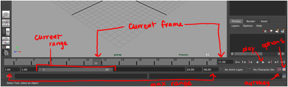

You are here: Home → Basic Animation
Basic Animation
Welcome to the animation lab! We will be going over animation on a 2D level, as well as create our first 3D animation.
Basics of 2D Animation
Before we jump into the wonderful world of 3D animation, you should have an understanding of the principles behind 2D animation . There are 12 "basic principles" that adds the "illusion of life" to animation; without these, you might end up with creepy animations that glide across the screen in an eerie manner.
- Squash and stretch
- Anticipation
- Staging
- Pose to Pose versus Straight Ahead Action
- Follow Through and Overlapping Action
- Slow In and Slow Out
- Arcs
- Secondary Action
- Timing
- Exaggeration
- Solid Drawing
- Appeal
Squash and Stretch
This is probably one of the most important principle to take home from this lecture. Squashing and stretching an object gives it a sense of weight and volume. It is very important to keep in mind that the volume of the object does not change when it is squashed or stretched. For example, in the bouncing ball example, which you will soon see, when we lengthen the ball horizontally, we also shorten it vertically correspondingly.
Anticipation
Anticipation is simply any action in your animation that prepares the audience for the main action to come. A classic example would be a character winding its arms and front leg back before dashing off in sprint.
Staging
This simply describes setting up your scene to focus the audience's attention to the most important aspects of the scene. For example, a close-up shot of a character's face would highlight the character's immediate emotion whereas a long shot of say, a desert, might highlight the vast emptiness of the setting to provoke a feeling of loneliness. In the wise words of Wikipedia: "The essence of this principle is keeping focus on what is relevant, and avoiding unnecessary detail." You don't want to overwhelm the audience with too much information or actions at once.
Pose to Pose versus Straight Ahead Action
These are two different approaches to 2D animation. In "straight ahead action" approach, the artist draws out a scene frame by frame from beginning to end, while in "pose to pose," the artist starts by drawing a few key frames, and filling in the intervals later. The latter approach describes what we do in Maya; we set "key frames" and Maya fills in the in-betweens for us. However, as you will soon discover, Maya's in-between frames can be unpredictable and not what we want, so we must specify what we want using various tools and tricks, which you will learn about later.
Follow Through and Overlapping Action
Follow through is the motion of separate parts of the character that continues after the character has stopped. For example, when a character throws a ball, the hand continues to move after releasing the ball.
Overlapping means to start a second action before the first action has completely finished. This keeps the interest of the viewer, since there is no dead time between actions.
Slow In and Slow Out
Movements in real life are rarely, if ever, instantaneous; they require time to accelerate and slow down. Thus, an animation looks more realistic if it has more frames near the beginning and end of a movement, and fewer in the middle.
A great example resides over on the Siggraph servers
Arcs
Most human and animal actions occur along an arched trajectory, and animation should reproduce these movements for greater realism. This can apply to a limb moving by rotating a joint, or a thrown object moving along a parabolic trajectory. The exception is mechanical movement, which typically moves in straight lines.
Secondary Action
This refers to action that directly results from another action. For example, a person's arms swinging back and forth would be secondary action caused by the person's act of walking. The important thing about secondary actions is that they emphasize, rather than take attention away from the main action.
Timing
Timing in animation refers to the speed of the action. Timing is what gives animation physical and emotional meaning. In the physical sense, the speed of the movement allows the viewer to perceive the mass of the object, since heavier objects will move slower than lighter objects. In the emotional sense, different timings of the same action can indicate completely different emotions.
Exaggeration
Exaggeration does not mean just distorting the actions or objects arbitrarily, but the animator must carefully choose which properties to exaggerate. If only one thing is exaggerated then it may stand out too much. If everything is exaggerated, then the entire scene may appear too unrealistic.
Solid Drawing
The principle of solid - or good - drawing, really means that the same principles apply to an animator as to an academic artist. The drawer has to understand the basics of anatomy, composition, weight, balance, light and shadow etc. Of course, modern-day computer animators in theory do not need to draw at all, but can still benefit greatly from such understanding.
Appeal
Appeal means something that the audience will want to see. This is equivalent to charisma in a live actor. A scene or character should not be too simple (boring!) or too complex (can't understand it). One principle to achieve this is to avoid mirror symmetry. Asymmetry tends to be more interesting and appealing.
References
- Principles of Traditional Animation Applied to 3D Computer Animation
- "12 Basic Principles of Animation" on Wikipedia
If you are interested in learning more about the basics of animation, the CS department offers a great 2D animation course taught by Brian Barsky. The course number is CS194-7, but its not offered every semester. There is also UCBUGG's sister DeCal, Principles of Animation, where you can learn specifically how to animate!
Getting Familiar with Animating in Maya
Animation Interface in Maya
We should only be using controllers to animate, so let’s turn off all selectables except nurbs curves and locators. Make sure the squiggly line (nurbs curves) and locators (question mark) are selected.
Below is Maya’s timeline. You will be able to see the keys you set here, scrub through the animation, and change the time range of your animation. The max range describes the total number of frames of your animation (outer two numbers, in this case 1 and 48). The current range describes the range you’re seeing in the timeline right now, in this case 1-24.

The key in the right hand corner is the toggle for auto-key, which we will talk about later. For now, let’s click the options box and configure our settings.
Under settings, make sure the time is playing at Film (24fps).
Also look under Settings > Time Slider and check that Playback speed is at Real-time (24fps).
For the bouncing ball exercise later in the tutorial, go into the Settings>Animation and make sure the tangent settings are checked for weighted tangents, default in tangent is set at Plateau, and that default out tangent is set at Auto.
Setting Key frames in the Viewport and Channel Box
Notice that each controller will have multiple attributes in the channel box. You can key them separately by a right click and select “Key Selected” and that lets you key the individual channel. The box will turn red and a key frame will show up in the time slider.
You can also key all attributes at one time if you first select the controller and then hit “S”. Notice that all the attributes in the channel box now turned red. The downside to this is that it sets keys unnecessarily and can make the graph editor difficult to deal with.
In the previous two methods described, you need to remember to set a key after posing out your shot. You can also use the auto key function. When turned on, it will set a key every time you make a change either in the viewport. Be careful that you actually make changes you intend, otherwise just undo the appropriate amount of steps back. Note that auto key only automatically sets keys on attributes that have already had one key set on it.
If you need to change the timing, you can move the keys all at once by highlighting them in the graph editor. You can do this by shift + left clicking over the area of keys that you wish to move. Then move those keys by clicking and dragging the little red arrows that show up.
Graph Editor
We use the graph editor to get more control over our animation. Each attribute of each controller will correspond to a curve in the graph editor. Each key is represented by a dot in the graph editor, and the curves can be shaped more appropriately by manipulating the tangents of each dot.
Here is the interface of the graph editor.
Just take note of where all the buttons are located. We will go over why we use these later.
Also go into View>Tangents and have “On Active Keys” selected. This way you will always see your tangents and you don’t have to select th key first to see the tangent.
Bouncing Ball – Layering Approach
Layering means we work with an individual attribute at one time and build up the animation by adding other attributes as we go on. You use this method when animating more complicated things like bodies. For example, you can first animate the root (hips) and then animating the legs, and then the arms, etc. Essentially it just means layering in isolated sections so you don’t get confused with many things going on.
Let’s start with the bouncing ball!
Here is a 2D drawing of what a ball bounce looks like. Notice the way the ball stretches before hitting the ground, squashing, and then rebounding up to its original shape at the top. These are all important notes that we will try to recreate during our ball bounce.

Image from http://www.evl.uic.edu/ralph/508S99/squash.html
Please download this ball rig.
For animating the horizontal and vertical translation of the entire ball, use the squiggly controller, called mainControl. For animating squash and stretch later, use the top circle controller, called upper control.
For the bouncing ball, we will first deal with the Ty (translate Y) of the master controller, or whichever controller is controlling the movement of the ball. Place keys only in this channel until it looks good as ball bounce in place.
- Does it have good arcs?
- Does the timing feel good?
- Is the behavior “ball-like”?
After nominally setting some keys for a bouncy behavior, but when I played it back, the ball wasn’t jumping up very quickly. To fix this, let’s go into the graph editor and manipulate the tangents.
The curve for the Ty movement of the ball probably looks like this right now.
Remember the 2D graphic? The ball bounces up in a sharp turn at the bottom. To recreate that curve in Maya, we will select all the keys and their tangents and hit “free tangent weight”. Notice that solid spheres that were the tangent handles are now clear boxes. We can manipulate them around in the graph editor now. Have your move tool (hit W for hot key), highlight the tangent handle, and you can freely drag it around using your middle mouse button. If you want to only drag the handle in one isolated direction, press shift while you middle mouse button.
After some manipulation, my curve now looks like this, which is closer to the original 2D graphic.
You can also manipulate the keys themselves in the graph editor. Have your move tool selected (hit W) and you can select the keys and move them around in the graph editor by dragging the middle mouse button. Shifting keys is also really easy. Just select the keys, hold down shift, and drag them left or right.
Now let’s move to horizontal translation, which is in this case, Tx. The curve for this will look very different from the Ty curve. Experiment by setting keys and figure out what it should look like. When we’re happy with the Ty of the ball, let’s deal with the Tx (horizontal translation).
- Is the ball “easing into” a stop?
Onto squash and stretch! Note the direction that the ball will squash and stretch during the ball bounce. Note the direction that the ball will squash and stretch during the ball bounce. Refer to the 2D picture for reference and think about how you would move the upper control of the ball rig so that the ball is stretching and squashing appropriately.
After layering all these parts together, we may have to go back and adjust a little based on the new additions, but in the end we hopefully have a convincing bouncing ball!